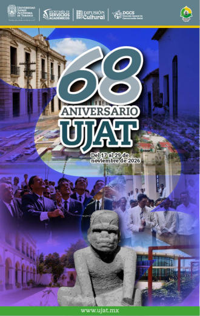

✦
♫
✧
UNIVERSIDAD JUÁREZ AUTÓNOMA DE TABASCO68 años de historia,
68 años de historia,
cultura y orgullo
juchimán
Descubre los encuentros, la música, la literatura, el deporte y las experiencias que celebran nuestra universidad.
Explorar el programa ↓
¡Celebremos
juntos! ✨
juntos! ✨
ELIGE TU EXPERIENCIA
Agenda de actividades ✦
Selecciona una fecha, busca un evento o descubre las actividades por categoría.
Programa sujeto a cambios sin previo aviso. La información se basa en el programa digital oficial proporcionado. Consulta cada cartel para verificar los detalles.